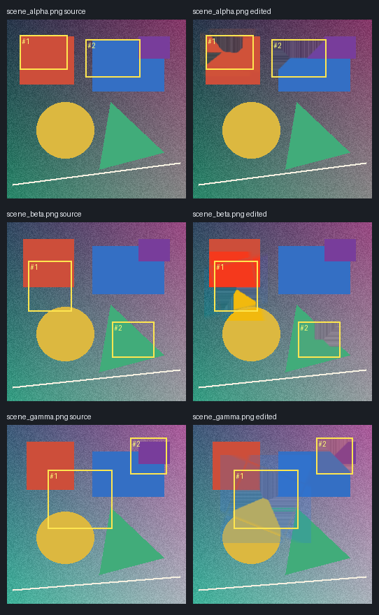
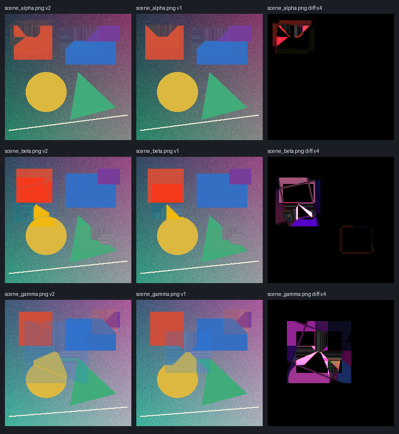
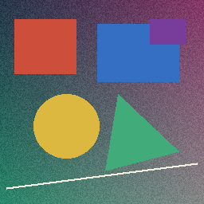
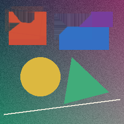
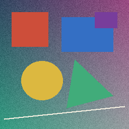
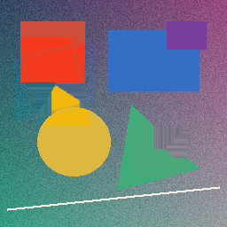
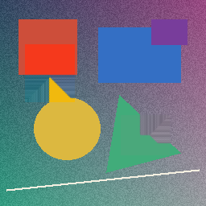
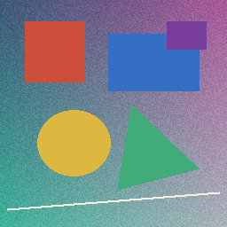
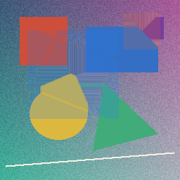
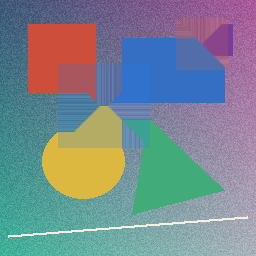

Deterministic Image Edit Interop Workbench
Offline v1/v2 exchange diagnostics, fixed-point rendering, region-level incremental reuse, snapshot recovery, and cross-version boundary attribution.
Final content fingerprint
031f134f4484d9c1b30f3489f3e7675a73b0a6e7bb57057aab6b2dde4648bad2Semantic equivalenceTrue
Recomputed / reused (last command)6 / 0
Pending queue0
Max active tasks / limit4 / 4
Sidecar restore hits6
Style max deviation0.0004
Boundary samples4
Visual Review

diagnostics.json · cross-version diff preview


scene_alpha.png



scene_beta.png




scene_gamma.png




Command Trajectory
| Command | Op | Version | Incremental = Full | Snapshot |
|---|---|---|---|---|
CMD-ABN-MIXED-V1 | load_exchange_file | 1 | True | None |
CMD-ABN-RESTORE-V2 | set_exchange_version | 2 | True | {'global_version': 1, 'snapshot_id': 'snap-000001', 'path': '/home/zsl/feedback/uidfc5909d3-default-134/state/abnormal/snapshots/snap-000001'} |
Final Region Trace
| Region | Status | Affected px | Stages | Content fp |
|---|---|---|---|---|
scene_alpha.png#001 | computed | 5708 | parse:computed, mask:computed, repair:computed, attribute:computed, style:computed, compose:computed | 2590fe5a750f11d0 |
scene_alpha.png#002 | computed | 4212 | parse:computed, mask:computed, repair:computed, attribute:computed, style:computed, compose:computed | f2d6a91edf1e8b7d |
scene_beta.png#001 | computed | 8985 | parse:computed, mask:computed, repair:computed, attribute:computed, style:computed, compose:computed | 6f14d256afc9fb75 |
scene_beta.png#002 | computed | 3972 | parse:computed, mask:computed, repair:computed, attribute:computed, style:computed, compose:computed | 3a6d9851241ed93c |
scene_gamma.png#001 | computed | 16370 | parse:computed, mask:computed, repair:computed, attribute:computed, style:computed, compose:computed | f4a493656060be0f |
scene_gamma.png#002 | computed | 2704 | parse:computed, mask:computed, repair:computed, attribute:computed, style:computed, compose:computed | 169549c85c3f9552 |
Cross-Version Regions
| Region | Coord Δ max | Style Δ | Local pixel Δ | Attribution | Boundary sensitive |
|---|---|---|---|---|---|
scene_alpha.png#001 | 0.4 | 0.0003 | 150 | coordinate_integerization, strength_permille_truncation, dropped_rotation_or_feather | True |
scene_alpha.png#002 | 0 | 0 | 0 | - | False |
scene_beta.png#001 | 0.5 | 0.0004 | 195 | coordinate_integerization, strength_permille_truncation, dropped_rotation_or_feather | True |
scene_beta.png#002 | 0.5 | 0 | 20 | coordinate_integerization, dropped_rotation_or_feather | True |
scene_gamma.png#001 | 0 | 0.0004 | 128 | strength_permille_truncation, dropped_rotation_or_feather | True |
scene_gamma.png#002 | 0 | 0 | 0 | - | False |
Failures
| Code | Command | Region | Message |
|---|---|---|---|
E_FIELD_TRUNCATED | CMD-ABN-MIXED-V1 | - | line 7 has 31 chars, expected 62 |
Injection Hits
| Injection ID | Source | Expected code | Hit |
|---|---|---|---|
INJ-V1-TRUNCATED | injection_config | E_FIELD_TRUNCATED | True |
INJ-V2-STRUCTURE | injection_config | E_STRUCTURE_INVALID | True |
INJ-V2-OUT-OF-RANGE | injection_config | E_REGION_OUT_OF_RANGE | True |
INJ-V1-UNKNOWN-REGION | injection_config | E_REGION_OUT_OF_RANGE | True |
INJ-MIXED-V1 | CMD-ABN-MIXED-V1 | E_FIELD_TRUNCATED | True |
Environment
{"container": false, "gpu": false, "numpy": "1.26.4", "offline": true, "pillow": "11.0.0", "platform": "Linux-6.18.33.2-microsoft-standard-WSL2-x86_64-with-glibc2.35", "python": "3.11.0rc1", "system": "Linux"}